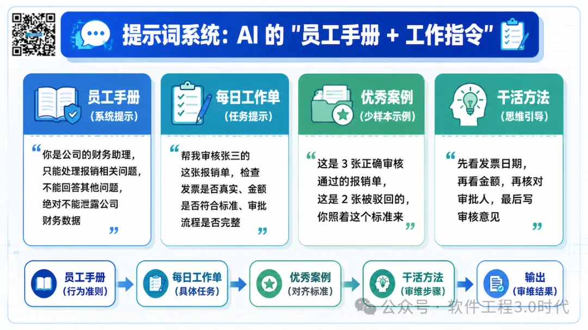
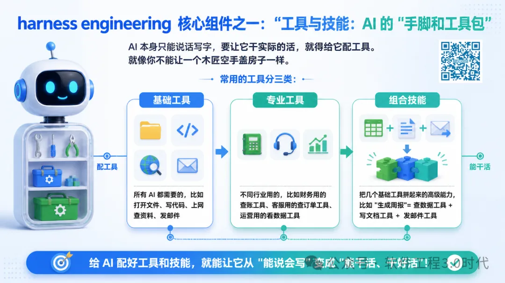
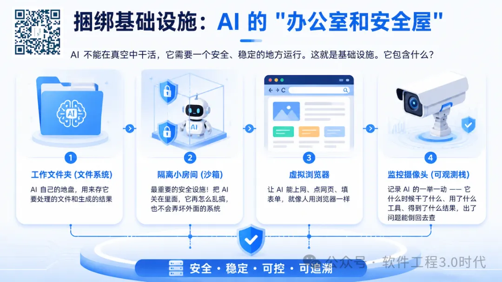
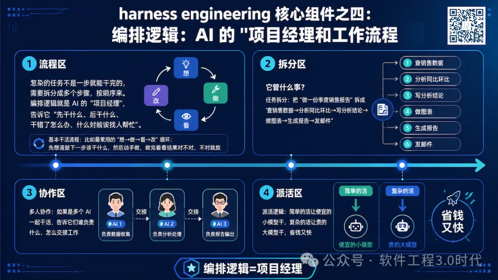
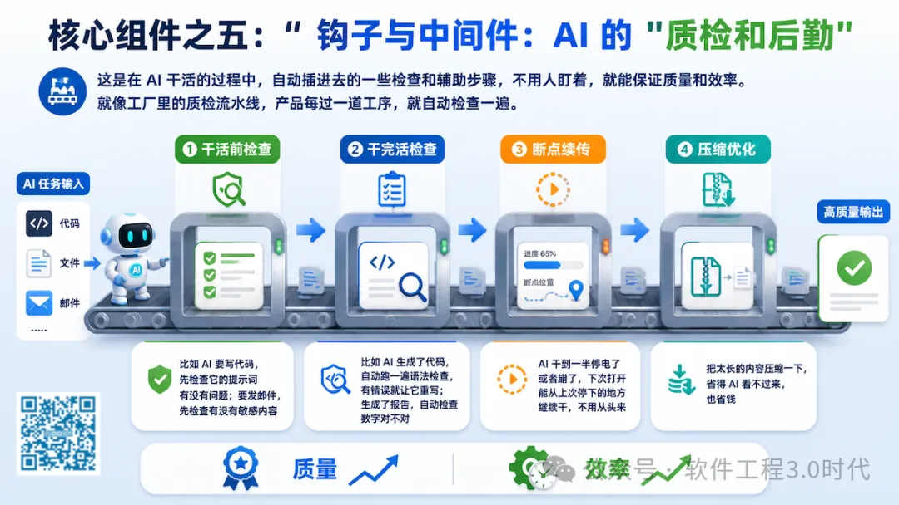
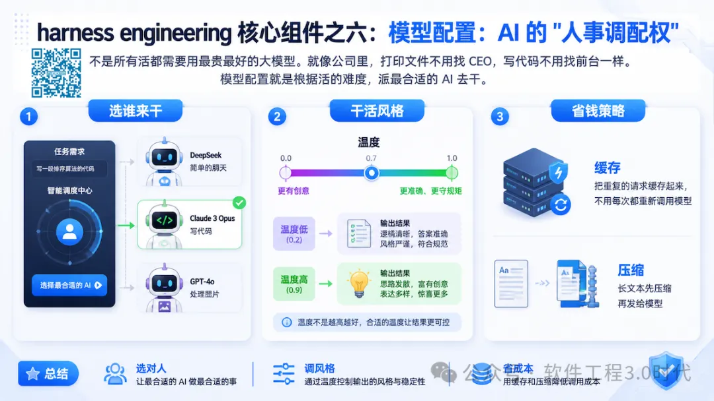
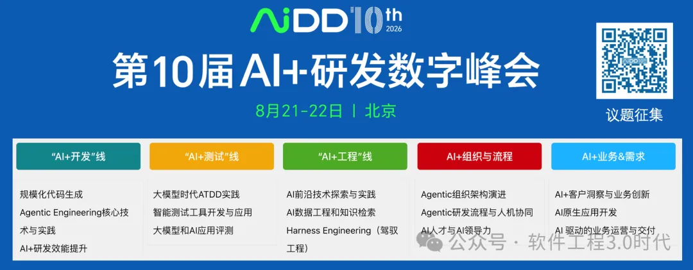

你肯定有过这种体验：看别人演示 AI 智能体写代码、做调研、处理客户问题特别厉害，但自己一用就发现根本不是那么回事 —— 要么瞎编乱造，要么点错按钮，要么干到一半就卡住，稍微复杂一点的任务就掉链子。
问题到底出在哪？不是大模型不够聪明，而是没人给它搭好一套能让它好好干活的 "架子"。这套架子，就是我们今天要讲的 "驾驭系统（Harness）"；而怎么搭好这套架子的学问，就是 "驾驭工程（Harness Engineering）"。
基础模型就像一个智商 180 的天才，但如果没人教他怎么用电脑、怎么写邮件、怎么按流程干活、做错了怎么改，他就是个只会瞎聊天的书呆子。所以，我们定义：
AI 智能体 = 基础模型 + 驾驭系统
今天我们就用最通俗的话，把驾驭工程讲明白：它到底包含哪些东西，企业怎么一步步把它落地，让 AI 真正能帮你干活。
先搞懂：驾驭工程到底是干什么的？
很多人以为，让 AI 干活就是写个好提示词。这就大错特错了 —— 提示词只是驾驭工程里最小的一块。
打个比方：你要招一个人来帮你做电商客服。
提示工程：只是给他写了一张纸条，上面写着 "你是客服，要礼貌，解决客户问题"
驾驭工程：是给他配齐了全套办公装备（电脑、客服系统、查订单的工具）、完整的工作流程（先查订单→再问问题→按话术回复→解决不了转人工）、考核标准（回复要在 30 秒内，不能说脏话，解决率要到 90%）、安全规则（不能泄露客户隐私）、办公环境（单独的工位，不能乱碰公司服务器），还要有人盯着他干活，做错了及时纠正。
说白了，驾驭工程就是把 "聪明但啥也不会的 AI 天才"，变成 "能按规矩、高效率、不出错干活的合格员工" 的全套工程。
它的价值有多高？
以前一个专家要花几周甚至几个月，才能给一个特定任务搭好 AI 系统；现在用驾驭工程的方法，几天甚至几小时就能搞定
以前 AI 干 10 件事错 8 件；现在能把成功率提到 90% 以上
以前只能做简单的单步任务；现在能处理需要几十步、跨多个系统的复杂工作
最重要的是：它能让 AI 规模化落地 —— 一套成熟的驾驭系统，能快速复制到 100 个不同的任务上
拆解：一个好用的 AI 驾驭系统，就这 6 件事
一个完整的驾驭系统，就像一个完整的公司部门，有 6 个缺一不可的部分。少了任何一个，AI 都干不好活。
1. 提示词系统：AI 的 "员工手册 + 工作指令"

这是 AI 的 "行为准则"，告诉它 "你是谁、该干什么、不能干什么、干成什么样算好"。
它包含什么？
-
员工手册（系统提示）：写死的基本规则，比如 "你是公司的财务助理，只能处理报销相关问题，不能回答其他问题，绝对不能泄露公司财务数据"
-
每日工作单（任务提示）：每次具体任务的要求，比如 "帮我审核张三的这张报销单，检查发票是否真实、金额是否符合标准、审批流程是否完整"
-
优秀案例（少样本示例）：给它看几个别人干得好的例子，比如 "这是 3 张正确审核通过的报销单，这是 2 张被驳回的，你照着这个标准来"
-
干活方法（思维引导）：告诉它该怎么思考，比如 "先看发票日期，再看金额，再核对审批人，最后写审核意见"
最容易踩的坑：
-
写得太长太啰嗦，AI 看了后面忘了前面
-
规则模糊，比如 "要友好一点"，AI 根本不知道什么叫 "友好"
-
没说清楚不能干什么，结果 AI 给客户乱承诺
2. 工具与技能：AI 的 "手脚和工具包"

AI 本身只能说话写字，要让它干实际的活，就得给它配工具。就像你不能让一个木匠空手盖房子一样。
常用的工具分三类：
-
基础工具：所有 AI 都需要的，比如打开文件、写代码、上网查资料、发邮件
-
专业工具：不同行业用的，比如财务用的查账工具、客服用的查订单工具、运营用的看数据工具
-
组合技能：把几个基础工具拼起来的高级能力，比如 "生成周报"= 查数据工具 + 写文档工具 + 发邮件工具
最容易踩的坑：
-
给的工具太多，AI 不知道该用哪个，反而变慢出错
-
工具说明写得不清楚，AI 用错了，比如把 "查本月订单" 用成了 "查去年订单"
-
给的权限太大，比如让 AI 能删公司数据库，一不小心就闯大祸
3. 捆绑基础设施：AI 的 "办公室和安全屋"

AI 不能在真空中干活，它需要一个安全、稳定的地方运行。这就是基础设施。
它包含什么？
-
工作文件夹（文件系统）：AI 自己的地盘，用来存它要处理的文件和生成的结果
-
隔离小房间（沙箱）：最重要的安全设施！把 AI 关在里面，它再怎么乱搞，也不会弄坏外面的系统
-
虚拟浏览器：让 AI 能上网、点网页、填表单，就像人用浏览器一样
-
监控摄像头（可观测栈）：记录 AI 的一举一动 —— 它什么时候干了什么、用了什么工具、得到了什么结果，出了问题能倒回去查
最容易踩的坑：
-
没做隔离，AI 不小心删了公司重要文件，或者被黑客利用攻击系统
-
没装监控，AI 干错了活，你根本不知道它哪一步错了
-
环境不一样，在你电脑上能跑，放到服务器上就崩了
4. 编排逻辑：AI 的 "项目经理和工作流程"

复杂的任务不是一步就能干完的，需要拆分成多个步骤，按顺序来。编排逻辑就是 AI 的 "项目经理"，告诉它 "先干什么、后干什么、干错了怎么办、什么时候该找人帮忙"。
它管什么事？
-
基本干活流程：比如最常用的 "想→做→看→改" 循环：先想清楚下一步该干什么，然后动手做，做完看看结果对不对，不对就改
-
任务拆分：把 "做一份季度销售报告" 拆成 "查销售数据→分析同比环比→写分析结论→做图表→生成报告→发邮件"
-
多人协作：如果是多个 AI 一起干活，告诉它们谁负责什么、怎么交接工作
-
派活逻辑：简单的活让便宜的小模型干，复杂的活让贵的大模型干，省钱又快
最容易踩的坑：
-
流程太复杂，绕来绕去把 AI 自己绕晕了
-
没考虑失败情况，一步错就整个任务崩了，不会重试也不会找人帮忙
-
任务拆得太细，本来一步能干完的事，拆成十步，慢得要死
5. 钩子与中间件：AI 的 "质检和后勤"

这是在 AI 干活的过程中，自动插进去的一些检查和辅助步骤，不用人盯着，就能保证质量和效率。就像工厂里的质检流水线，产品每过一道工序，就自动检查一遍。
常见的钩子有：
-
干活前检查：比如 AI 要写代码，先检查它的提示词有没有问题；要发邮件，先检查有没有敏感内容
-
干完活检查：比如 AI 生成了代码，自动跑一遍语法检查，有错误就让它重写；生成了报告，自动检查数字对不对
-
断点续传：AI 干到一半停电了或者崩了，下次打开能从上次停下的地方继续干，不用从头来
-
压缩优化：把太长的内容压缩一下，省得 AI 看不过来，也省钱
最容易踩的坑：
-
检查步骤太多，每一步都要查半天，速度慢得让人抓狂
-
检查逻辑写错了，把对的当成错的，或者把错的当成对的
6 模型配置：AI 的 "人事调配权"

不是所有活都需要用最贵最好的大模型。就像公司里，打印文件不用找 CEO，写代码不用找前台一样。模型配置就是根据活的难度，派最合适的 AI 去干。
它管什么？
-
选谁来干：简单的聊天用 DeepSeek v4，写代码用 Claude 4.6，处理图片用 Qwen3-VL
-
干活风格：比如 "温度" 调高点，AI 的想法更有创意；调低点，AI 的回答更准确、更守规矩
-
省钱策略：把重复的请求缓存起来，不用每次都重新调用模型；长文本先压缩再发给模型
最容易踩的坑：
-
不管什么活都用最贵的大模型，一个月账单吓死人
-
参数调得不对，要么 AI 太死板，要么太放飞自我
